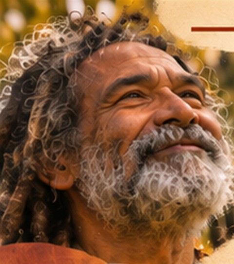
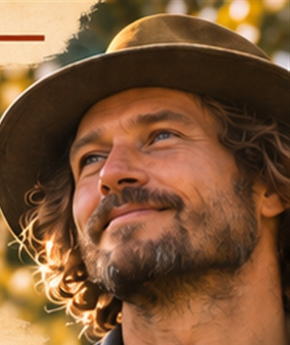
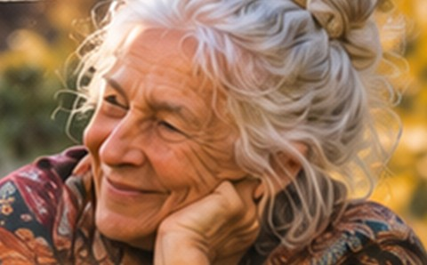
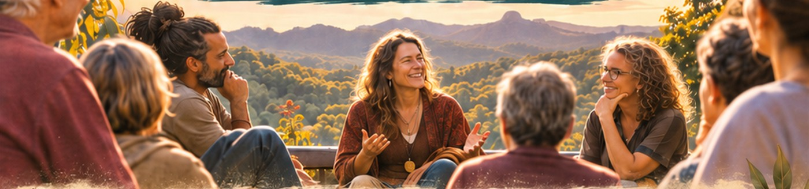

Discover
Meet people whose remarkable experiences deserve to be heard.


The Mullumbimby Series
Extraordinary ordinary people.
Real stories. Shared wisdom. Human possibilities.
Every community is home to extraordinary people.
Be Part of Something Extraordinary Discover the Experience01 / The idea
Producing Human Encounters is a new series of live gatherings celebrating the extraordinary richness of ordinary human lives. We bring together people from different walks of life to share their stories, discoveries and wisdom.
No celebrity headliners. No gurus. No hierarchy.
Just people with something valuable to share.
02 / The experience
Meet people whose remarkable experiences deserve to be heard.

Listen to real stories, discoveries and ideas from people who have lived them.

After the introductions, the room opens into conversation, learning and the possibility of friendship.
03 / The inaugural gatherings
Four live gatherings in Mullumbimby, each featuring around invited people from different walks of life. Think educators, founders, artists, carers, community leaders, environmentalists and people with extraordinary life experiences.
04 / An invitation
Everyone has a story. Some stories deserve to travel further.
We’re looking to invite remarkable people from the Northern Rivers and beyond to take part in our first four events.
Have you built something remarkable, overcome a challenge, made a discovery, helped others, or learned something worth passing on? We’d love to hear from you.
“Sometimes the most extraordinary thing we can do is recognise the extraordinary in one another.”